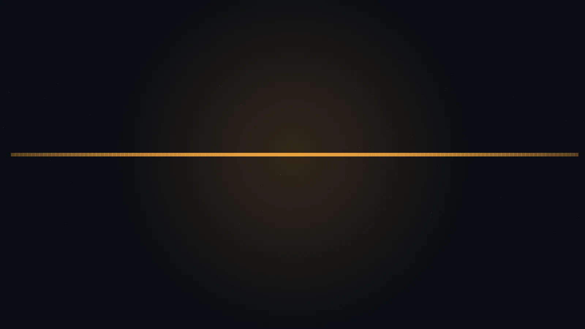
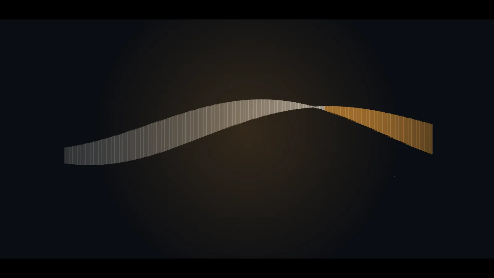
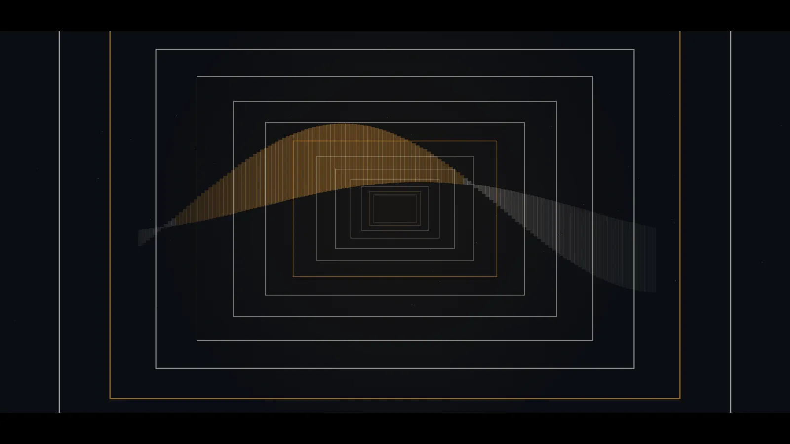
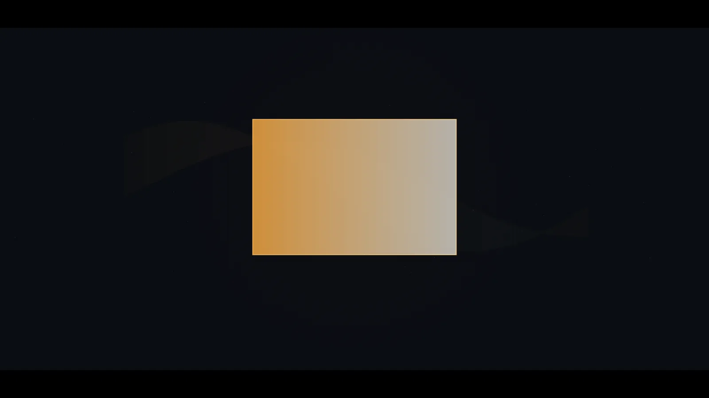

Titles that hold the frame
I design the first ninety seconds of a film: the opening titles, the cast cards, the end crawl. Below is the 2026 reel. Scroll to play it; stop, and it holds the frame.
Reel 2026 · 4 shots · 00:06:00
The 2026 reel, as a storyboard
Four shots, one commission each. With motion on, this is a film you scrub by scrolling.

Shot 01 · 00:00:00
Nodir Opar
Main titles for a river drama. One line of light opens, and the cast arrives on it.

Shot 02 · 00:01:12
Kantha
Series titles. The stitch is the title card; each name rides a turn of the thread.

Shot 03 · 00:03:00
Projectionist
A festival trailer. The camera pushes through every gate a print passes on its way to the screen.

Shot 04 · 00:04:12
End card
An ident for a cinema chain: every door closes into one lit screen, then the light cuts.
Credits
- 2026ProjectionistFestival trailer · design and animation
- 2025Nodir OparMain and end titles · feature
- 2025End cardCinema ident · direction
- 2024KanthaSeries titles · 8 episodes
- 2023Monsoon LedgerDocumentary titles and maps
- 2021The Ferry at FourShort film · titles and grade notes
Booking titles for 2027
Send the cut, the runtime and the date you lock picture. I reply within two working days with a treatment and a fee.
titles@noorhaque.film